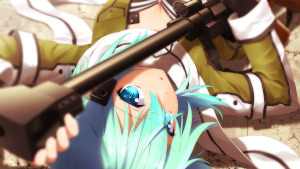

Bem-vindo(a) ao Portal SAO
Sobre o anime
Sword Art Online light novel escrita por Reki Kawahara e ilustrada por abec. O enredo da série ocorre em um futuro próximo e se concentra em vários mundos de realidade virtual de MMORPG.
Divisões
Primeira Temporada
Segunda Temporada
Phantom Bullet
Excalibur
Mother's Rosario
Terceira Temporada
Project Alicization
Sword Art Online: Alicization
Sword Art Online: Alicization War of Underworl
Fonte: Wikipedia
Imagens do Anime

Músicas do anime
Primeira temporada
Arco: Aincrad (SAO)
LiSA - Crossing Field (abertura)
VIDEO Haruka Tomatsu - Yume Sekai (encerramento)
VIDEO
Arco: Fairy Dance (ALO)
Eir Aoi - Innocence (abertura)
VIDEO Luna Haruna - Overfly (encerramento)
VIDEO
Segunda temporada
Arco: Phantom Bullet (GGO)
Eir Aoi - Ignite (abertura)
VIDEO Luna Haruna - Startear (encerramento)
VIDEO
Arco: Calibur (ALO)
Haruka Tomatsu - Courage (abertura)
VIDEO LiSA - No More Time Machine (encerramento)
VIDEO
Arco: Mother's Rosario (ALO)
Haruka Tomatsu - Courage (abertura versão 2)
LiSA - Shirushi (encerramento)
Haruka Tomatsu - Separate Ways (insert song )
Sobre: somos um pequeno blog de um pequeno SAOFag que ama o anime
©Copyright 2021 -